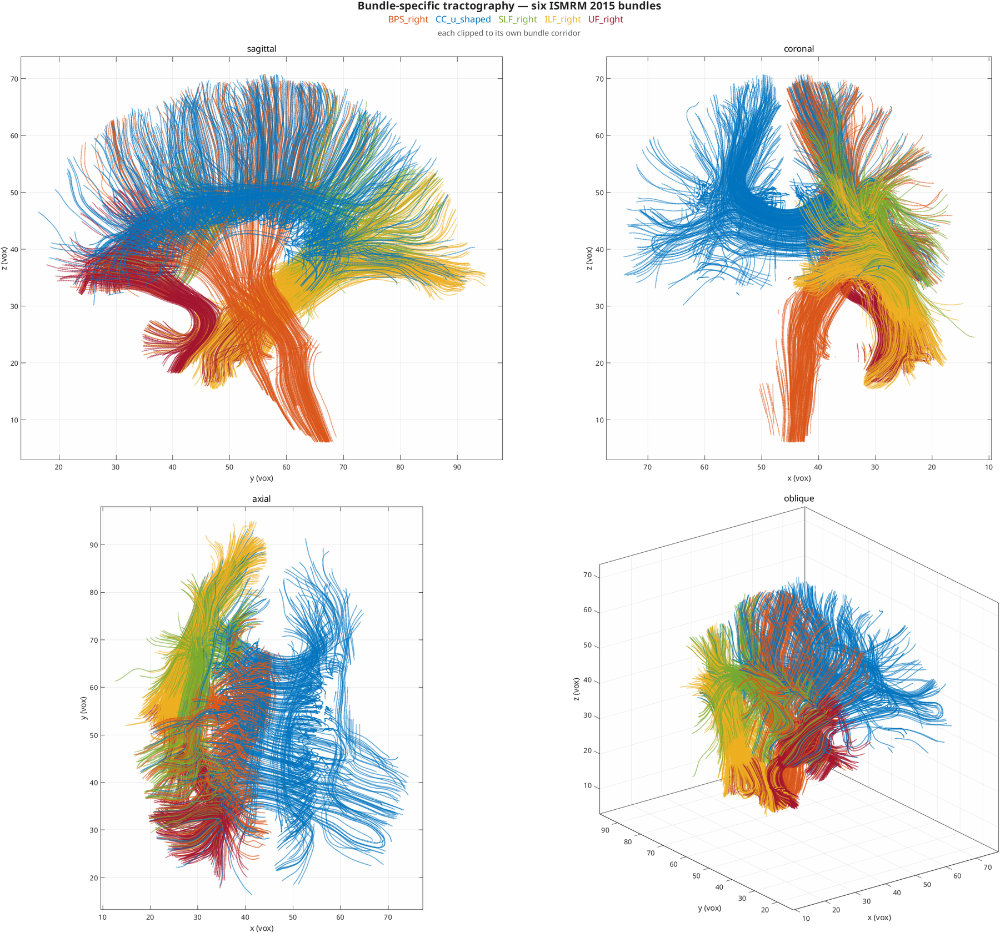

Tractography Methods¶
HINEC ships three trackers over one shared nim struct, selected by the
algorithm: key in the config's tractography: section. A second axis, field:,
chooses whether direction information comes from the DTI tensor or from CSD FOD
peaks. This page is the map; each tracker links to its own deep-dive.
runTractography(nim, config)
│ dispatch on config.tractography.algorithm (runTractography.m)
├── 'standard' → nim_tractography_standard FACT, discrete voxel tensors
├── 'hinec' → nim_tractography_hinec interpolated streamlines
└── 'mmf' → nim_tractography_mmf_connframe connection-form Method of Moving Frames
What it produces¶
Seeding from a region rather than the whole brain gives bundle-specific
tractography. Below, six ISMRM 2015 bundles spanning the major fibre classes,
each seeded from its own mask and filtered by the endpoint pair and containment
corridor that define it — see seeding.roi and
filter.endpoints_in.

Each is reconstructed independently; they are drawn together here only to show their spatial relationship. Per-bundle comparisons against ground truth are in ISMRM Scoring.
The three trackers¶
| Algorithm | File | Model | Integration | Interpolation | field |
|---|---|---|---|---|---|
standard |
nim_tractography_standard.m |
single tensor | Euler (FACT) | none (discrete voxel tensor) | dti |
hinec |
nim_tractography_hinec.m |
tensor or CSD FOD | Euler / RK2 / RK4 / RKF45 | trilinear | cubic | spline | dti | csd |
mmf |
nim_tractography_mmf_connframe.m |
tensor or CSD FOD | RK4 or RKF45 on the frame system | connection 1-form field | dti | csd |
standard — FACT¶
Classic Fiber Assignment by Continuous Tracking. Steps voxel-to-voxel along the discrete principal eigenvector with no sub-voxel interpolation. Fast, simple, the reference baseline. Full internals: Standard Tractography.
hinec — interpolated streamlines¶
The workhorse interpolated tracker. Tracking is interpolation plus integration only — the direction returned is a pure function of position, so classical Runge–Kutta order theory applies to it.
- Interpolation.
interpolation.methodselects the spatial kernel:trilinear(\(C^0\)),cubic(\(C^1\), Keys cubic convolution — not a spline), orspline(\(C^2\)). The kernel's smoothness caps the order the integrator can actually reach; measured orders are in Solution Verification.interpolation.upsampleresamples the field onto a grid of spacing1/upsamplevoxels before the interpolants are built (>1refines,<1coarsens) without changing the coordinate frame. - Integration.
integrator.method=euler,rk2,rk4(default), orrkf45(Dormand–Prince embedded pair with adaptive stepping;integrator.adaptive,tolerance,step_min,step_max,safety). See RKF45. field: dtiinterpolates the dyadic \( v_1 v_1^{\mathsf T} \) and takes its principal eigenvector, which is sign-invariant — interpolating signed eigenvector components would average across the arbitrary per-voxel sign of a line field.field: csdtracks FOD peaks: at each step the peak nearest the incoming tangent is taken, which reduces a multi-valued field to one direction and resolves crossings by approach direction. Requires the CSD peak field (see below).- ACT (Anatomically Constrained Tractography), off by default (
tractography.act), active only when WM/GM/CSF masks are present in thenim.
sel_power has been removed
Earlier versions re-weighted each stencil voxel by \( |n\cdot v|^{\text{sel\_power}} \),
the alignment of its direction with the incoming tangent. For DTI there is one principal
eigenvector per voxel and so nothing to disambiguate; the term simply bent a
single-valued field toward the current heading, making the ODE direction-dependent
(\( dx/ds = v(x, dx/ds) \)) and putting it outside classical order theory. It is gone
from hinec. MMF keeps its own, separate mmf.frame_sel_power for building the frame
field. Nearest-peak selection under field: csd is retained because it is structural,
not a tunable steering term.
Renaming (July 2026)
hinec is the tracker previously mislabelled algorithm: mmf with
integrator: rkf45. It has nothing to do with the Method of Moving Frames. The name
mmf now belongs to the genuine connection-form tracker below.
mmf — connection-form Method of Moving Frames¶
Chun & Peng (in preparation). Builds an orthonormal moving-frame
field {e1, e2, e3} plus its connection 1-form (curvature + torsion) into the nim
(main.m Step 2b), then traces by evolving a carried frame with the connection structure
equation — not by re-sampling a direction field. field: csd builds a per-peak
connection, giving multiple pathways through crossings. Full internals:
MMF Connection-Form Tractography.
The field: axis — DTI vs CSD¶
Both hinec and mmf accept field: dti (default) or field: csd.
dti— direction(s) from the diffusion-tensor principal eigenvector. One direction per voxel; cannot represent crossings.csd— direction(s) from Constrained Spherical Deconvolution FOD peaks. Up tocsd.max_peaksfiber populations per voxel; resolves crossings.
CSD FOD reconstruction¶
src/nim_calculation/nim_csd.m — a native single-shell, single-tissue CSD (Tournier 2007):
- real spherical-harmonic fit of the DW signal (design matrix from bvecs,
lmax), - single-fiber response function estimated from high-FA voxels,
- constrained spherical deconvolution (iterative non-negativity),
- peak extraction from the FOD.
It writes peaks into the same interface the multi-direction trackers consume, so CSD and the DTI field are interchangeable upstream of tracking:
nim field |
Meaning |
|---|---|
nim.peaks [X Y Z maxK 3] |
up to maxK unit peak directions per voxel |
nim.npeaks [X Y Z] |
number of valid peaks per voxel |
nim.peak_w [X Y Z maxK] |
peak amplitudes (used by SIFT) |
nim.fod_sh |
SH FOD coefficients |
Provisioning & caching. runTractography provisions the peaks before the algorithm
dispatch, so any tracker running field: csd — hinec and mmf alike — gets them. The FOD
is computed once with nim_csd and cached next to the source nim as <source>_csd.mat
(e.g. data/ismrm2015/ismrm2015_csd.mat); later runs load the cache.
CSD parameters (config section tractography.csd):
| Key | Default | Meaning |
|---|---|---|
lmax |
6 | SH order (capped by the number of directions) |
max_peaks |
3 | max peaks kept per voxel |
peak_thresh |
0.5 | min peak amplitude (fraction of max FOD) |
peak_min_sep |
45 | min angular separation between peaks (deg) |
n_iter |
50 | deconvolution iterations |
SIFT — tractogram filtering¶
src/nim_tractography/nim_sift.m + bin/run_sift.sh. A post-processing filter
(Smith 2013 analog, per-lobe): it prunes streamlines so that streamline density on each FOD
lobe matches that lobe's FOD amplitude. Each streamline segment is attributed to the FOD
peak it best aligns with; lobes carrying more density than their amplitude warrants are
over-represented, and streamlines running through them are removed. This cuts overreach
(false-positive spray) for precision, and — unlike a per-voxel density match — distinguishes
a legitimately dense bundle from invalid spray loading a weak/wrong lobe.
Requires a CSD FOD field (nim.peaks + nim.peak_w). No re-tracking — it filters an
existing run's tractogram into a new scorable run dir:
| Key | Default | Meaning |
|---|---|---|
sift_batch_frac |
0.03 | fraction of streamlines removed per iteration |
sift_n_iter |
60 | max iterations |
sift_min_keep |
0.20 | floor on fraction of streamlines kept |
sift_align_pow |
1 | weight excess by mis-alignment (0 = off) |
Output → hinec_runs/<run>_sift/. With --score, runs the
ISMRM scorer on the filtered result.
PFT — external baseline (DIPY)¶
scripts/run_pft_dipy.py — Particle Filtering Tractography (Girard 2014) via DIPY, the
winning ISMRM-2015 approach per Renauld 2023: CSD FOD + probabilistic tracking + CMC
anatomical priors + particle-filter backtracking. It exists as a comparison baseline for
the recall/overlap deficit of deterministic tracking, and emits a .trk (RAS world) for the
same scilpy scorer. Tissue masks are the DWI-space masks from HINEC preprocessing (no
T1→DWI registration to misalign).
Track data structure¶
Every tracker returns the same structure: tracks is a cell array; each cell is an N×3
matrix of voxel-space coordinates giving the complete trajectory (not just endpoints);
N varies per fiber. Saved under <run_dir>/tractography/tracks_<algorithm>_<timestamp>.mat
together with options, elapsed_time, and algorithm.
Config-driven experiment workflow¶
Preprocess once, then iterate tractography without re-preprocessing. This is the sanctioned way to run experiments — do not hand-write MATLAB batch scripts or hand-create run dirs.
1. Preprocess once (main.m writes the canonical nim to the data layer, plus a copy in
the run dir, and reuses an existing preprocessed DWI if present):
./bin/run_hinec.sh data/ismrm2015/ismrm2015 ismrm2015.mat config/ismrm2015.yml
# → data/ismrm2015/ismrm2015.mat (canonical processed nim)
2. Iterate tractography (auto-sourced from the data-layer nim; each run gets its own tagged, scorable run dir):
# single config
./bin/run_tractography.sh hinec_csd --score
# design-space sweep with --set (DSE), no new YAML per point
for d in 4 8 16; do
./bin/run_tractography.sh hinec_csd --score --set seeding.density=$d
done
<config>acceptsconfig/<name>.yml,<name>.yml, or bare<name>.- Source defaults to
data/ismrm2015/ismrm2015.mat; override with--source <nim.mat | run_dir>. The DWI reference is copied (frozen) into the new run'sintermediate/(+SOURCE.txt) so a later reprocess can't corrupt an old run's scoring reference. --set key=valueoverrides any schema parameter on the CLI, addressed by canonical path (tractography.integrator.step), by path with the section assumed (integrator.step), or by a bare leaf name when it is unique (upsample). Unknown or ambiguous keys are an error, not a silent no-op. The run-dir name is tagged with the overrides andoverrides.txtrecords them.--scorerunsbin/run_ismrm_scoring.shon the run dir →scoring/renauld2023/results.json(headline keysmean_f1,mean_OL,mean_OR_gt,VB). Compare runs by that JSON.
Data layer vs run dirs. The nim + preprocessed refs + CSD cache
(data/ismrm2015/ismrm2015_csd.mat) live in data/ismrm2015/; hinec_runs/run_*/ hold
tractography outputs only. Never store a nim inside a run dir.
See also Run Directory System and ISMRM Scoring.
Choosing a tracker¶
| Goal | Start with |
|---|---|
| Fast baseline / sanity check | standard (config/standard_dti.yml) |
| Best deterministic single-tensor result | hinec + field: dti (config/hinec_dti.yml; loosen termination.angle_max / termination.fa_min to push recall) |
| Crossings resolved by FOD | hinec + field: csd (config/hinec_csd.yml) |
| Intrinsic curvature/torsion geometry | mmf (config/mmf_dti.yml / mmf_csd.yml) |
| Cut overreach after tracking | any of the above, then run_sift.sh |
| Probabilistic recall reference | PFT baseline (scripts/run_pft_dipy.py) |
YAML Config documents every parameter; it is generated from
src/nim_utils/nim_config_schema.m, the single source of truth for the config surface.
config/README.md lists the shipped presets and the naming rule they follow.